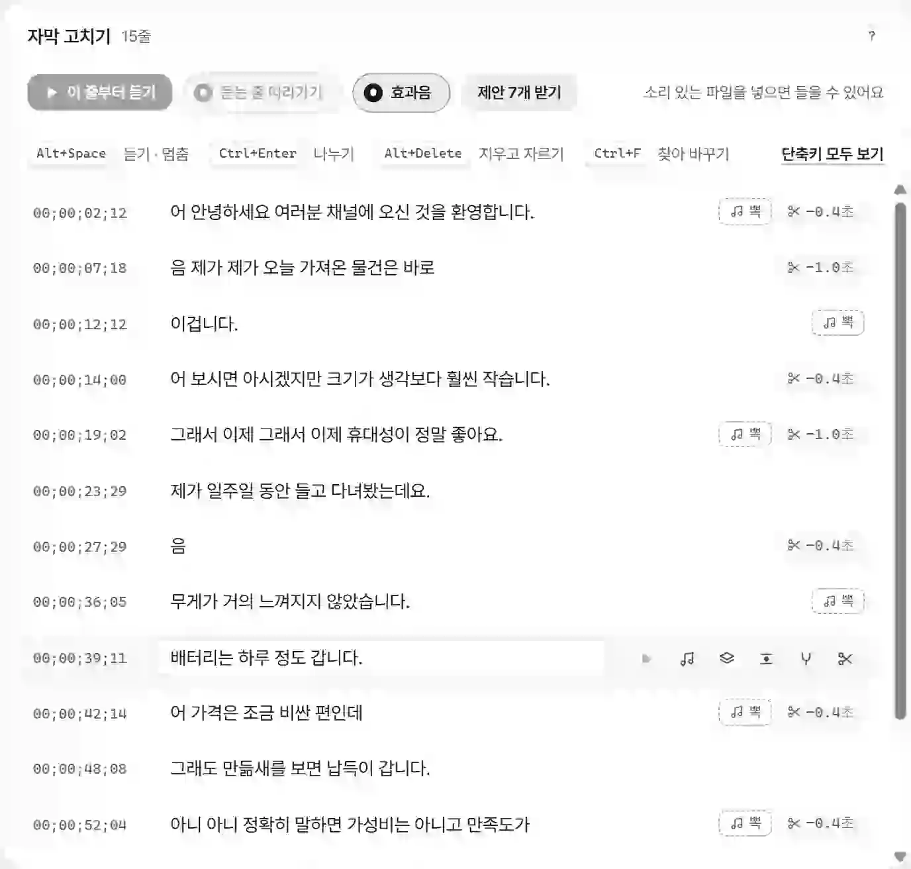
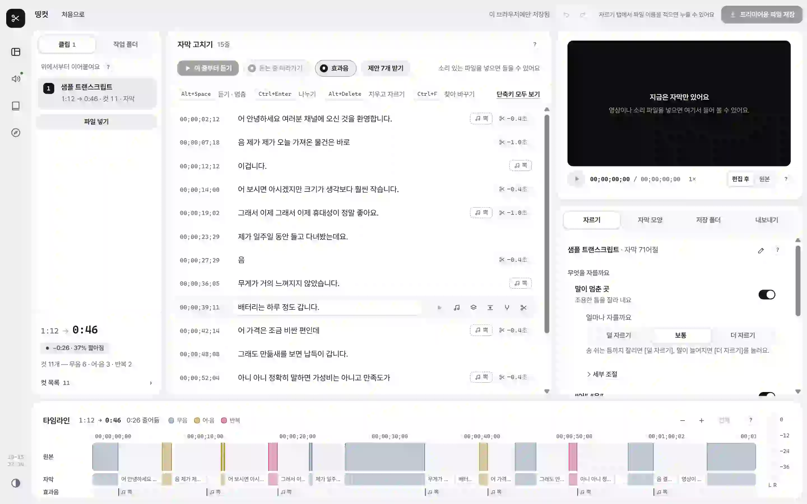

촬영본을 넣으면 잘릴 곳과 자막이 나와요. 프리미어에서 가져오기 한 번이면 잘린 시퀀스와 자막이 들어와요.
프리미어 프로 쓰는 분용 · 무료, 가입 없음 · 영상은 내 컴퓨터 밖으로 나가지 않아요
받는 중이에요. 처음 켤 때 경고 창이 한 번 떠요 — 넘기는 법 보기
말소리를 듣고 글로 받아 적은 뒤에 찾아요. 그래서 소리 크기만으로는 못 찾는 “어”와 되풀이한 말도 잡아요.
제가 일주일 동안 들고 다녀봤는데요. 음8.6초 정적무게가 거의 느껴지지 않았습니다.
어보시면 아시겠지만 크기가 생각보다 훨씬 작습니다.
그래서 이제그래서 이제 휴대성이 정말 좋아요.
잘린 결과를 들으면서, 틀린 자막은 그 자리에서 고쳐요. 살리고 싶은 컷은 눌러서 되살려요.

컷은 시퀀스로, 자막은 캡션 트랙으로 들어와요. 프리미어에서 이어서 편집하면 돼요.
[프리미어용 파일 저장]을 누르면 XML · 자막 SRT 를 한꺼번에 저장해요.
프리미어에서 파일 → 가져오기(Ctrl+I)로 .xml 을 열면 시퀀스가 생겨요.
그 시퀀스를 두 번 눌러 타임라인에 열어요.
.srt 도 가져온 뒤 타임라인 위로 끌어다 놓으면 캡션 트랙이 돼요.
xattr -dr com.apple.quarantine /Applications/DDingCut.app개인이 만든 프로그램이라 아직 코드 서명 인증서를 사지 않았어요. 그래서 운영체제가 “누가 만들었는지 모른다”고 알리는 것이고, 바이러스로 판정한 것이 아니에요. 띵컷은 이 페이지와 GitHub 릴리스에서만 받으세요.
화면 왼쪽 위 애플 메뉴 → 이 Mac에 관하여. “칩”에 Apple M… 이 적혀 있으면 M칩, “프로세서”에 Intel 이 적혀 있으면 Intel 이에요.
컷마다 들어 보고 켜거나 끌 수 있어요. 전체를 [덜 자르기 · 보통 · 더 자르기]로 바꾸고, 경계는 끌어서 옮겨요. 잘못 눌러도 Ctrl+Z 로 돌아가요.
잘린 영상은 프리미어 시퀀스로만 넘어가요. 자막은 SRT 파일로 따로 저장할 수 있어서 다른 편집기에서도 쓸 수 있어요.
